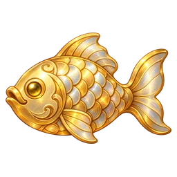

Cats of the Changing Sky
Choose a cat, a season, and a way to climb.

0 fishMove with A/D, arrow keys, or mouse. Space or Enter launches. Esc returns here.
Choose a cat, a season, and a way to climb.

0 fishMove with A/D, arrow keys, or mouse. Space or Enter launches. Esc returns here.
0 fish available
Earn fish by climbing, catching airborne visitors, and opening mystery crates. Gear stays yours; supplies are used once. Press the matching number on the item bar or click its icon to equip or use it.
Choose the cat shown on the browser toolbar. This choice is separate from the cat you play.
Save a copy of this browser's scores, settings, fish, gear, and supplies.